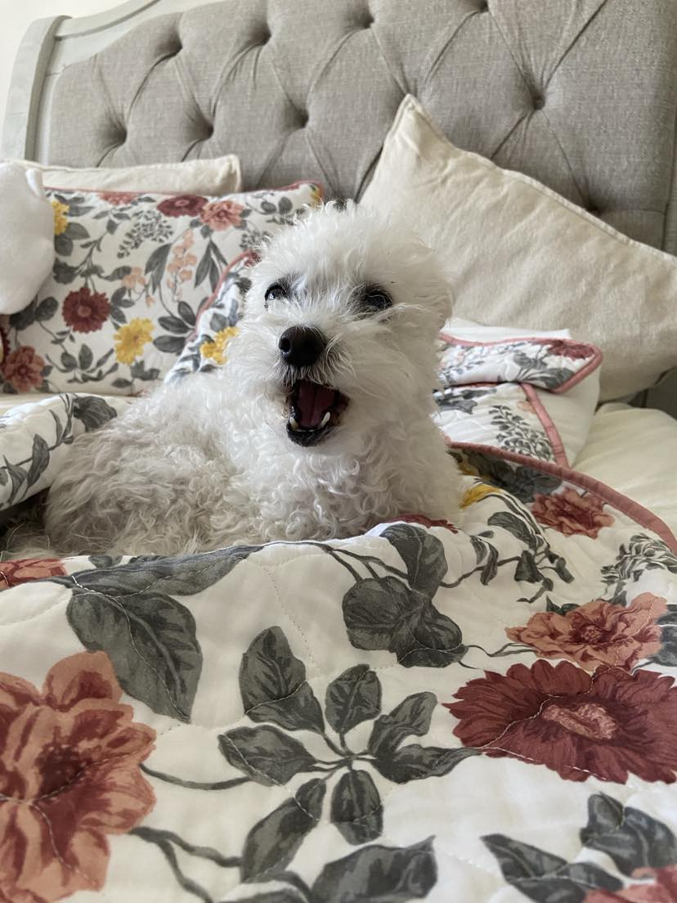

Hello everyone, welcome to my profile! I am a recent new grad from the University of Toronto. After 5 gruellling and tough years pursuing a computer science degree, I have finally graduated only to find out...the software industry is completely saturated, mass layoffs are happening EVERYWHERE (yes! Even the big tech companies! insanity!), and all entry-level/junior positions are overfilled with mid-senior developer applicants. The stars are definitely not in my favour! I sobbed! I bawled! I cried! I panicked! But no! 2024 is the year of the dragon, NOT the crybaby! And so, here I am trying to review and learn some new skills, and catch myself up on the current industry standards-- starting with web development, leading to the creation of this website. In the coming weeks, expect this website to grow, morph, and transform as I continue to learn new frontend technologies and develop my eye for design.
My background is in automation development, as given by my prior internship experience. I would be qualified for any entry-level position as a Test Automation Developer, QA Engineer, or even as a Software Development Engineer in Test (SDET as coined by Microsoft). I also have a background in ML. During my final years of undergrad I took several courses within the realm of AI such as Artificial Intelligence, Machine Learning, Computer Vision, and I've even enlisted myself in two different research experiences-- one in computational chemistry working with Genetic AI, and the other in computer vision working on out-of-distribution detection (OOD).
My tech journey doesn't stop at ML! My skillset and interests are constantly morphing and changing. Currently I've taken a liking to learn more about project management, and also game development. For fun, I enjoy writing stories, jamming on the guitar, and snowboarding.
If you've made it this far-- wow! You must be in love with me or something (just kidding)! Thank you for reading, and I hope you're as pumped as I am to see how this portfolio of mine expands in the coming future.
In thanks of visiting my website, here's a reward- a picture of my dog, Twinkie! 